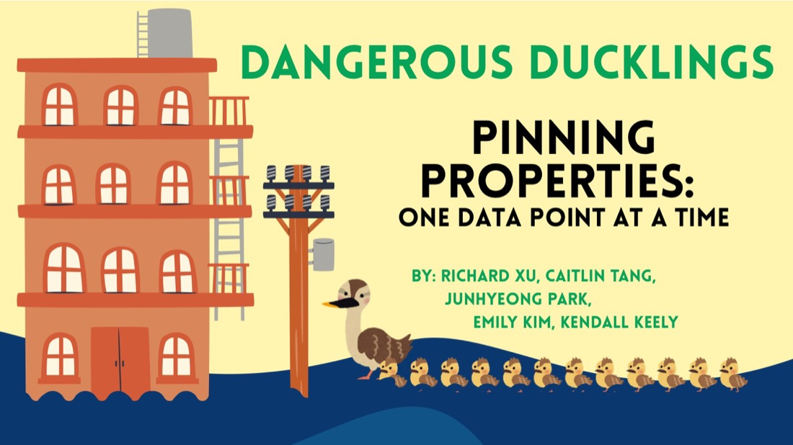
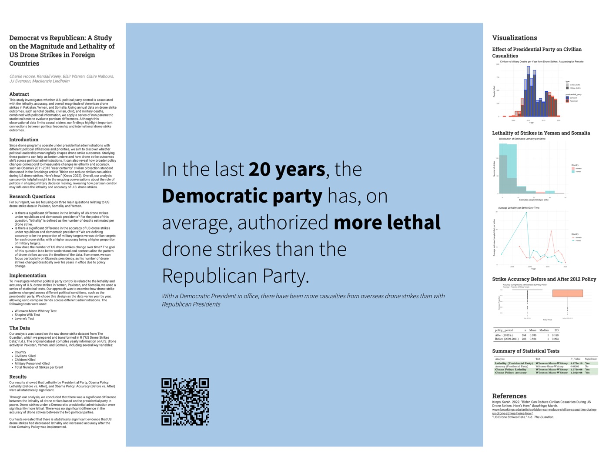

>>> kendall.projects()
Projects.
Three projects that pushed me in different directions — speed and collaboration under a 48-hour clock, business decision support with real money attached, and careful statistical inference on messy public data.

Pinning Properties: LA Office Micro-Trends
UCLA's DataFest gives you a commercial dataset and 48 hours. Ours came from Savills: a large national record of U.S. office leasing. My team — the Dangerous Ducklings — set out to find where office demand actually went after the pandemic, rather than just confirming that it fell.
We narrowed to Los Angeles County so we could say something specific instead of something vague. That meant cleaning and merging thousands of lease records, geocoding building addresses, and mapping how A-class and O-class buildings diverged block by block.
- Cleaned and merged high-volume leasing records across inconsistent address formats
- Geocoded buildings and mapped leasing activity spatially
- Built a scoring system to rank micro-markets by demand shift
- Delivered a presentation judged against 70+ competing teams
Power Pricing & Yearly Rent Dynamics
During my summer internship at Storage Star, a self-storage operator, I built a multi-part analytics report on rent per square foot across their Texas, Colorado, Utah, and California markets. The question behind it was practical: where is pricing drifting, and is that drift real or noise?
- Quarter-over-quarter change detection across markets
- Power model fitting, with residual and diagnostic checks
- Climate-controlled vs. non-climate-controlled unit comparisons
- Outlier identification and sensitivity analysis to test how fragile each conclusion was
- Reproducible visualizations and reporting built in R and Quarto
The deliverable contains Storage Star's proprietary pricing data, so it isn't published here. Happy to walk through the methodology and findings in conversation.

Does Party Control Change Drone Strike Lethality?
For our capstone, my group asked whether U.S. political party control is associated with the lethality, accuracy, and magnitude of drone strikes in Pakistan, Yemen, and Somalia — using two decades of records compiled by The Guardian.
The data was annual, non-normal, and unbalanced across administrations, so parametric tests were off the table. We built a cleaned yearly dataset, derived comparable metrics, and used nonparametric methods throughout.
- Transformed The Guardian's raw strike records into a clean annual dataset
- Derived comparable metrics including median people killed and accuracy ratios
- Tested partisan differences with Wilcoxon-Mann-Whitney, validating assumptions with Shapiro-Wilk and Levene's
- Examined whether the 2012 "Near Certainty" policy changed outcomes